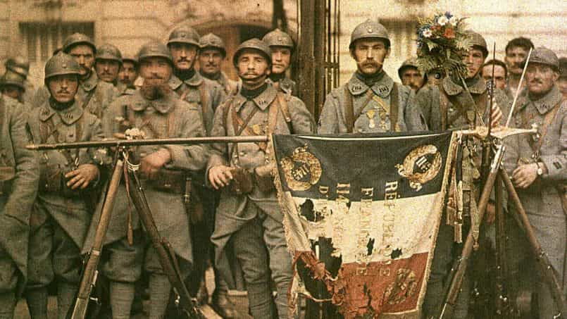
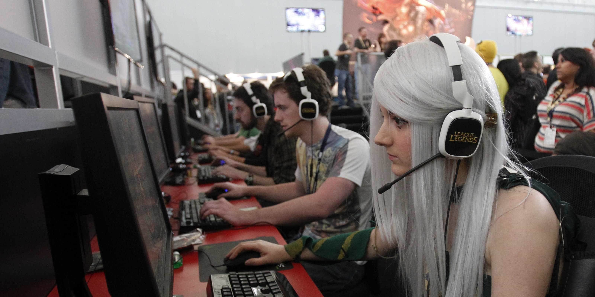
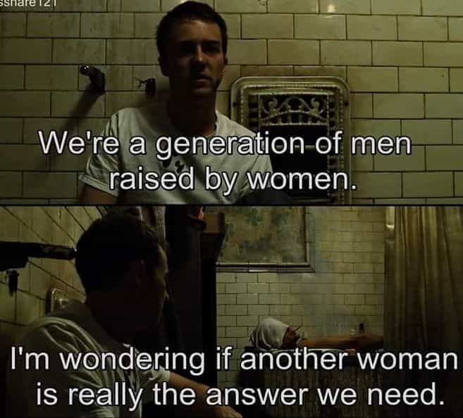

The treacherous, lazy and cowardly French. We have all come across this cliche. It is time to understand what are the forces behind the creation of this unjust reputation and put it to rest.
Being French, I have heard quite a few of these jokes about the French army running away in many countries or the ones about French civilians focused more on love and wine-drinking than creating and conquering. I don’t mind those as they are usually extremely funny and I believe that self-derision is an essential part of having a sense of humor
The legends around our hedonistic nature might have triggered those thoughts but something deeper was at work. The French display the same symptoms of cultural decline that are present everywhere in the Western world: high divorce rate, forced immigration, encouragement of degeneracy, destruction of male icons, widespread use of the birth control pill, famous white men targeted and smeared, etc. So why are they singled out as weak?
1. A slanderous campaign lead by American cuckservatives
It would be easy to evoke the past victories of the French and the Franks before them to show that out of the world’s nations, they have one of the highest victory ratio worldwide. But no matter how glorious the past of the French was in military matters, it all was eclipsed by the most recent and memorable defeat of 1940.
When one thinks about that era, Poland, the Netherlands and Belgium got trampled by the Wermacht too, but France’s case stayed in the collective memory as it was one of the most imposing nations of the “Old World” that was brought to its knees.
The soldiers on the French side fought bravely and paid a heavy price (200,000 military casualties, almost as much as the U.K) before their institutions chose the path of least resistance through the collaboration with the invader. Sun Tzu describes it well when he writes in The Art of War that “even if a general knew many victories, they could all be ruined by a single resounding defeat.”

The “French bashing” and the campaign of character assassination was stirred up after 9/11 and the start of the second Iraq campaign when Jacques Chirac refused to follow the United States in Iraq to protect their “national interests” (read “oil and Saddam dropping the US dollar in 2000”) and fight for their greatest Eskimo allies, linking the choice of the French not going to Iraq with their “cowardice” of 1940.
That is when the whole “cheese eating surrendering monkey” meme was created by cuckservatives (Jonah Goldberg, Mark Molesky, Kenneth Timmerman), popularised by American neocons from the Bush administration, then relayed by Murdoch-run media and their lapdogs in Europe.
2. Masculine heroes are degraded while effeminate figures are promoted
Strong pre-seventies role models become more rare. That phenomenon is also observable in other Western countries. Movie male archetypes of the previous decades have been demonized. Strong father or warrior figures in French history and arts have been turned into the bogeyman of modernity, heirs of vile times of “colonialism”, “inherent violence”, “inequality” and “machismo”.
Entertainment giants and powerful corporations have been selling for a few years the “twig-armed metrosexual bobo” as being the feminine ideal. Actors that looked and behaved like men such as Ventura, Gabin or Belmondo are now a relic of the past. Now, Romain Duris and other urban preys with haircuts like distressed brooms are carried to the pinnacle of fame.
These actors sometimes dress like women
The only French musicians that are promoted to the top charts or gain access the TV studios in France are PC pawns with scrawny bodies of heroin addicts that sing with a falsetto voice or ethno-masochistic “white rappers”.
They are advertised as the ones who reach status, become wealthy, and swim in a sea of women. The old style of singers have been replaced: Brel, Montand or Bécaud. All gone.
The plague is observable at its most advanced stage on the web. French teenagers are now fed endless channels of effeminate and geeky Youtube clowns like Squeezie, Cyprien or Norman (one of his vids is where he elaborates about the shame of being white).
It is incredible to think that their whole comic routine is based on being lonely, eternal teenagers playing video games all day, mocked by girls, and crippled by white guilt. These are the characters that are also exported and sold overseas. The random foreigner will think that this is how the majority of Frenchmen act like.
The contemporary urban native French youth is exhorted to identify as those fragile stereotypes. Young strong patriots are persona non grata everywhere in the media. They already have to endure non-native violence in silence but now the institutions pile up on them too
French young men are stuck between a rock and a hard place: being attacked by city predators, staying passive, being mocked and spat on, or defending themselves or daring to raise their voice and being called racist by the politically correct junta of Parisian bobos and punished by the law.
The French population, just like the Germans, the English and the Swedes, are forced to love their enemy and celebrate their weakness. Let us not forget how Rome fell:
3. An absence of retaliation against hostile elements
Our country has also been the butt of everyone’s joke lately following the deadly attacks lead by home-grown Muslim terrorists, after the country’s leaders failed to control our borders or acknowledge and name the problem of radical Islamism in France on our territory.
We are mocked because the majority keeps voting Left, holding candle vigils, and preaching diversity from their gated communities. We are mocked because the majority stays idle, defenceless and like the man falling from the proverbial building, keeps repeating to itself “So far, so good”.
I have met a lot of locals in the countries I visited that were curious and actually quite puzzled about the impotence of our government following those attacks and their inability to protect our people and terminate nationwide Muslim radicalism.
The Eastern Europeans were especially surprised that there was no violent public reaction against Muslims. The idea they shared a few times could be condensed to this: “It is strange. Until I met you, I thought that the French were weak-minded, happy that Muslims treat them like doormats and desecrate their land”. I heard that concept a lot. I imagine that they did not know that the traitors of the Left and the State are almost as hostile towards patriots as violent immigrants are.
The election of Emmanuel Macron only supports the thesis that a sizeable number of French leftists enjoy their masochistic relationship with immigrant rape, Islamic pillaging, foreign almighty banking cartels, and the advancement of the homosexual agenda by voting for a frail liberal bedding a shriveled grandma twice his age while keeping his closeted homosexuality low key. Now the whole planet can see that this French prototype of urban metrosexuality, beacon of passivity, and betatude can reach the highest spheres and actually become president of the country.
4. Traditional masculine hobbies in decline
The French have good athletic results in a wide variety of sport so the problem does not come from physical incapability, but now the most popular and televised urban sport in the country is soccer, a hotbed of immigrant gangster culture, cheating, corruption, frail physiques, dirty money, and questionable morals. French schools teach less and less sport and if they do they usually limit it to a couple of hours of track &and field or team sports.

With the help of the media, video games are now painted as hip and trendy instead of being a waste of productive time and a culture of isolation and escape of reality.
The culture of weapons is also wavering. The number of hunters and sport shooters are in free-fall, the result of a feminisation of society, disappearance of fathers transmitting the hobby to their sons, and a attack of that way of life led by media moguls.
The laws are becoming more complicated to purchase guns and the intrusive surveillance of legal gun owners by the state is becoming ridiculous. While as everywhere else, most crimes involving weapons are committed by illegal holders, but cutting the supply of those weapons in no-go zones does not seem to be a priority for the government.
Since last year, globocuck decision maker J.C. Junker got out of his customary alcoholic slumber to add additional tedious regulations for gun owners in his lifelong project of finally disarming all European citizens. It is not hard to understand that obtaining anything more than an air gun will soon become a bureaucratic hell in France.
5. Our men are raised by women

This problem is endemic to the Western world. Young white men are not incited to go after girls and reproduce. Our women have great potential and used to reach high standards of beauty, but third-wave feminism, abortion on demand, and television programming turned them into a majority of insufferable narcissists on one end of the spectrum and unattractive manly women on the other.
Girls of the feminist persuasion, following what is parroted to them everywhere, see their egos inflate exponentially when they have even an above-average physique, as competition between very attractive girls is scarce.
The young French man does not have public masculine role models anymore. He might only count on the male role models that are in his immediate circle. If his father bails or the family does not value masculinity, he is on his own and absorbs what the global trends tell him to believe.
France also has one of the highest divorce rates worldwide and children conceived out of wedlock often guarantee a fatherless childhood. Compulsory military service has been revoked in 1997 so the majority of boys born after 1979 have no military training whatsoever. An additional way to be guided by masculine institutions was removed.
This is why I observe that the “male” crowd in skinny jeans and pastel scarves is now a staple in every large city center. That is what happens when smacking your children for misbehaving becomes illegal.
6. A sword is dangling over those who speak their mind
Your words can be held against you at all times in France. As soon as you state something—even if it is the truth—that hurts a snowflake’s feelings, you can be punished for what you said.
This shields the French from a lot of opinions that would be considered “illegal” or “unpopular” in their home country. And generally speaking, they are not used to other people being verbally aggressive towards them for the sake of it (apart from allochthonous elements in France). Hence why they get offended and defensive easily, which could explain why they are perceived as sensitive and thin-skinned. As soon as they travel abroad, especially where people are used to speak their mind, they are in for a shock
The French are so scared of being called “racist” or any “-ist” curse (I remember being afraid of that even in the school yard; it was like a scarlet letter, even if there was only one black child in my school) that a great number of people just choose to stay silent and endure the disrespect coming from all sides.
The laws that punish dissenting voices are so stiff, the majority has to find foreign grounds to hear or practice true freedom of speech. This is what happens when PC French men go abroad and get red pilled right in the cheese receiver. Prophetic real talk circa 2009:
Français, relève-toi
The defeatism of the French youth does not originate from flaws relative to their body or physical perception. They usually have a build that is reasonably tall and strong (if they do not destroy what has been given to them) and their strength only needs to be encouraged and cultivated. It is in their mind where ideas of inaction, defeat, and low self esteem germinates.
Our youth does not become weak only due to external factors. Every man is responsible for his own behaviour, but the way their environment keeps pounding that they are evil by nature, exhorts them to a plethora of vices, weakens, and discourages them on a daily basis.
All signs point to the existence of a fringe of the right-wing youth population that grows stronger by the day. Youths that have swallowed the red pill thanks to alternative media or helpful peers now see past the lies of the narrative. They seek to reach their maximum masculine potential and fight back against the forces that kicked them while they were down.
Although a majority follows the herd, an enlightened few had enough of this treatment and sharpen their blades in silence. The fire is rising, there is no doubt about that.
Read More: What It Was Like To Attend A French Survival Training In Poland


{kind=link}
{kind=link}